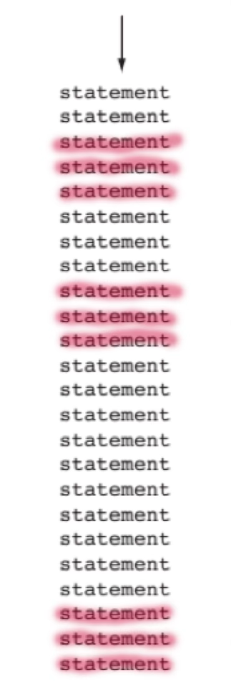
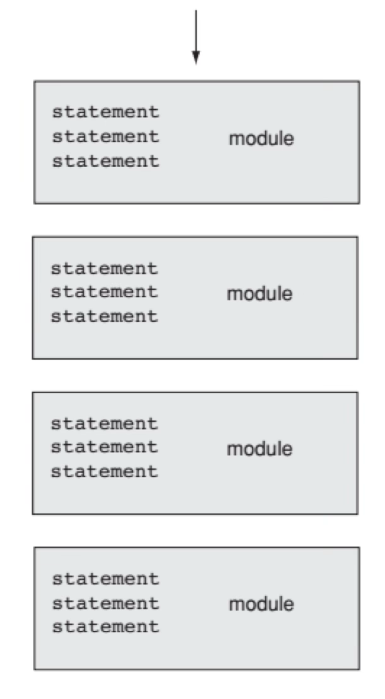

CISP 360 Structured Programming
Introduction to C++
Last Time
- Scope
- Shadow Variables I
- Advanced
cin - Random Numbers
Today’s Agenda
- Function Centric Architecture
- Functions
- Void Functions
- Passing Data In and Out of Functions
Function Centered Architecture
Function Centered Architecture
Function-centric architecture refers to a program design approach where the code is organized primarily around functions (procedures) rather than objects or classes.
A function is a block of code we assign a name to. We call the name to execute the code.
Other Architectures
- Object Oriented
- Spaghetti Coding
Object-Oriented Architecture
- Organized around classes/objects.
- Data and functions bundled together (mini programs).
- Focus: “What entities/objects exist?”
Spaghetti Coding
Just type it in as you go along.
#include <iostream>
#include <vector>
using namespace std;
int main() {
vector<int> scores = {85, 92, 78, 95, 88};
int index;
int total;
double average;
int highest;
// Jump to display section
goto display_scores;
display_scores:
index = 0;
display_loop:
if (index >= scores.size()) goto display_done;
cout << scores[index] << " ";
index++;
goto display_loop;
display_done:
cout << endl;
goto calculate_average;
calculate_average:
total = 0;
index = 0;
avg_loop:
if (index >= scores.size()) goto avg_done;
total += scores[index];
index++;
goto avg_loop;
avg_done:
average = static_cast<double>(total) / scores.size();
cout << "Average: " << average << endl;
goto find_highest;
find_highest:
highest = scores[0];
index = 0;
high_loop:
if (index >= scores.size()) goto high_done;
if (scores[index] > highest) {
highest = scores[index];
}
index++;
goto high_loop;
high_done:
cout << "Highest: " << highest << endl;
goto program_end;
program_end:
return 0;
}Why is this bad code?
- Unreadable - Jump around to understand flow
- Unmaintainable - Hard to modify without breaking
- Not reusable - Can’t call “display” from elsewhere
- Error-prone - Easy to create infinite loops or skip code
- Hard to debug - Control flow is non-linear
- No abstraction - All details exposed in one place
Never, ever, code like this.
Function Centric Architecture
- Functions are the primary building blocks of Structured Code
- The program is decomposed into a collection of functions
- Each function performs a specific task
- Functions call other functions to accomplish complex operations
Function Centric Architecture (cont)
- Functions are the primary building blocks of Structured Code
- Data and behavior are separated
- Data is typically stored in variables or structs
- Functions operate on that data
- Data is passed to functions as parameters
Function Centric Architecture (cont)
- Functions are the primary building blocks of Structured Code
- Data and behavior are separated
- Top-down design approach:
- Start with the main problem
- Break it into smaller sub-problems (functions)
- Each sub-problem becomes a function
Example
#include <iostream>
#include <vector>
using namespace std;
// Function declarations
double calculateAverage(vector<int> scores);
void displayScores(vector<int> scores);
int findHighest(vector<int> scores);
int main() {
vector<int> scores = {85, 92, 78, 95, 88};
displayScores(scores);
cout << "Average: " << calculateAverage(scores) << endl;
cout << "Highest: " << findHighest(scores) << endl;
return 0;
}
double calculateAverage(vector<int> scores) {
int total = 0;
for (int score : scores) {
total += score;
}
return static_cast<double>(total) / scores.size();
}
void displayScores(vector<int> scores) {
for (int score : scores) {
cout << score << " ";
}
cout << endl;
}
int findHighest(vector<int> scores) {
int highest = scores[0];
for (int score : scores) {
if (score > highest) {
highest = score;
}
}
return highest;
}Use Cases
- Introductory programming courses
- Simple, straightforward problems
- Mathematical computations
- Small to medium programs
- Scripts and utilities
Anti-Use Cases
- Large, complex systems
- Programs modeling real-world entities
- Systems requiring data encapsulation
- Projects with many developers
Conceptual Process
- Here’s some code

- Say several sections repeat
- This duplicate code will diverge at some point.

Solution
- Pull the duplicated code out.
- Give it a name.
- Call the duplicated code in the main part of the program.

Full Solution
statement
statement
function_name
statement
function_name
statement
statement
function_name
function_name
statement
statement
Coding Functions
How We Create Functions
Creating a Function
// 6-1.cpp -- Demo of functions
#include <iostream>
using namespace std;
// Function Prototype
void DisplayMessage();
int main() { // function 1
cout << "Hello from main()\n";
DisplayMessage(); // call function 2
cout << "Hello from main() again\n";
return 0;
}
void DisplayMessage() {
cout << "Hello from DisplayMessage()\n";
}Function Prototype
“A function prototype eliminates the need to place a function definition before all calls to the function.”
– Textbook, p.332.
Function Prototype Example
// 6-1.cpp -- Demo of functions
#include <iostream>
using namespace std;
// Function Prototype
void DisplayMessage();
int main() { // function 1
cout << "Hello from main()\n";
DisplayMessage(); // call function 2
cout << "Hello from main() again\n";
return 0;
}
void DisplayMessage() {
cout << "Hello from DisplayMessage()\n";
}Where’s the code?
// 6-1.cpp -- Demo of functions
#include <iostream>
using namespace std;
// Function Prototype
void DisplayMessage();
int main() { // function 1
cout << "Hello from main()\n";
DisplayMessage(); // call function 2
cout << "Hello from main() again\n";
return 0;
}
void DisplayMessage() {
cout << "Hello from DisplayMessage()\n";
}Notice how the function itself is BELOW main()
Function Location
A function can go above or below main().
The style in this language is to place them below main() AND use function prototypes.
Function Calls in a Function
#include <iostream>
using namespace std;
void Deeper() {
cout << "Now inside function Deeper()\n";
}
void Deep() {
cout << "Hello from Deep()\n";
Deeper();
cout << "Now back in Deep() again\n";
}
int main() { // function 1
cout << "Hello from main()\n";
Deep();
cout << "Hello from main() again\n";
return 0;
}
with Function Prototype
// 6-4.cpp -- Functions calling functions
#include <iostream>
using namespace std;
// Function Prototype
void Deep();
void Deeper();
int main() {
cout << "Hello from main()\n";
Deep();
cout << "Hello from main() again\n";
return 0;
}
void Deep() {
cout << "Hello from Deep()\n";
Deeper();
cout << "Now back in Deep() again\n";
}
void Deeper() {
cout << "Now inside function Deeper()\n";
}
We can call but not define
Notice we did not define a function inside another function, we just called it.
Defining a function inside a function is called nesting and is not allowed with functions in this language.
Output
Return of Void
Remember void?
We last saw void when we were looking at variable types.
Void Functions in C++
Usually when we create a function, we need to pass data back and forth between the function and the calling code.
But what if a function doesn’t need to return anything?
That’s where void comes in!
What is void?
void means “nothing” or “empty”
When you use void as a return type, you’re telling C++:
“This function does something, but it doesn’t give back a value.”
Think of it like:
- A light switch: It turns on a light (action), but doesn’t give you anything back
- A printer: It prints a document (action), but doesn’t return a value
A Void Function
Output:
Hello, World!Notice:
voidmeans no return value- No
returnstatement needed (or usereturn;with nothing after it) - Just call the function by its name with
()
Void Function Syntax
Parts:
void- The return type (nothing returned)functionName- The name you choose()- Parentheses (empty for now){ }- Curly braces contain the function body
Example: Display a Message
Output:
================================
WELCOME TO MY PROGRAM!
================================
Let's get started...Example: Multiple Void Functions
#include <iostream>
using namespace std;
void displayHeader()
void displayMenu()
void displayFooter()
void displayHeader() {
cout << "*** GRADE CALCULATOR ***" << endl;
}
void displayMenu() {
cout << "1. Enter grades" << endl;
cout << "2. Calculate average" << endl;
cout << "3. Exit" << endl;
}
void displayFooter() {
cout << "*** END OF PROGRAM ***" << endl;
}
int main() {
displayHeader();
displayMenu();
displayFooter();
return 0;
}Why Use Void Functions?
- Organize your code
- Avoid repetition
- Make code readable
Organize your code
Avoid repetition
Make code readable
displayWelcomeMessage()is clearer than 10 lines of cout- Functions act as labels for what the code does
Using return in Void Functions
Void functions can use return to exit early (no value after it):
Output:
Access denied.The function exits at return; and never reaches the “Access granted” line.
Example:
Clean Code with Void Functions
Before (messy main):
After (organized with void functions):
Much cleaner and easier to understand!
Summary
Void Functions:
- Use
voidas return type when no value is returned - Perfect for displaying output or performing actions
- Make code more organized and readable
- Don’t use
returnwith a value - Can’t be used in expressions or assignments
Passing Data To and From Functions
Topics:
- Understanding parameters and arguments
- Passing data into functions
- Returning data from functions
- Function prototypes
- Common mistakes and how to avoid them
- Practical examples
Why Functions Need Data
Consider this function:
Problem: This only works for Alice. What about Bob or Charlie?
Challenge: How can we make one function work for any name?
Solution: Give functions the ability to receive and process different data.
Parameters: Receiving Data
Parameters are variables in the function definition that receive data.
Anatomy:
stringis the data typenameis the parameter variable- Parameters exist only inside the function
Arguments vs Parameters
Parameter: Variable in the function definition (placeholder)
Argument: Actual value passed when calling the function (real data)
The argument value is copied into the parameter variable.
Single Parameter Example
Output:
Welcome, Alice!
Welcome, Bob!
Welcome, Charlie!Multiple Parameters
Functions can accept multiple pieces of data:
Key Rules
- Separate parameters with commas
- Each parameter needs a type
- Order matters - arguments must match parameter order
Parameter Order and Types
Arguments must match parameters in order and type:
Function Prototypes
Problem: C++ requires functions to be defined before they’re called.
Solution: Declare the function’s signature at the top with a prototype.
// Prototype (declaration) - tells compiler function exists
void displayStudent(string name, int age, double gpa);
int main() {
displayStudent("Alice", 20, 3.8); // Can call here
return 0;
}
// Definition (implementation) - actual code
void displayStudent(string name, int age, double gpa) {
cout << name << " is " << age << " years old" << endl;
}Prototype Syntax
// Full prototype with parameter names (recommended)
double calculateAverage(double score1, double score2, double score3);
// Parameter names optional, but less clear
double calculateAverage(double, double, double);
// Multiple prototypes
void displayMenu();
int getChoice();
double calculateTax(double amount);Common practice: Include parameter names for readability. They don’t have to match the definition’s names, but usually do.
Return Values: Sending Data Back
So far: Functions receive data through parameters (input)
Now: Functions can send data back through return values (output)
Key components:
intis the return typereturnstatement sends the value back- Return type must match the returned value
Using Return Values
Return Type Must Match
The return statement must match the function’s return type:
Rule: The compiler will error or warn if types don’t match or convert properly.
Multiple Return Statements
Functions can have multiple returns, but only one executes:
Important: Once a return executes, the function immediately exits.
Round-Trip Method
Example: Temperature Conversion
#include <iostream>
#include <iomanip>
using namespace std;
double celsiusToFahrenheit(double celsius); // Prototype
int main() {
double tempC = 25.0;
double tempF = celsiusToFahrenheit(tempC);
cout << fixed << setprecision(1);
cout << tempC << "°C = " << tempF << "°F" << endl;
return 0;
}
double celsiusToFahrenheit(double celsius) {
return (celsius * 9.0 / 5.0) + 32.0;
}Output: 25.0°C = 77.0°F
Example: Grade Determination
#include <iostream>
using namespace std;
char determineGrade(double average); // Prototype
int main() {
char grade = determineGrade(87.5);
cout << "Grade: " << grade << endl;
return 0;
}
char determineGrade(double average) {
if (average >= 90) return 'A';
if (average >= 80) return 'B';
if (average >= 70) return 'C';
if (average >= 60) return 'D';
return 'F';
}Output: Grade: B
Example: Grade Calculator
#include <iostream>
using namespace std;
// Prototypes
double calculateAverage(int s1, int s2, int s3);
char determineGrade(double average);
void displayResults(string name, double avg, char grade);
int main() {
string student = "Alice";
double avg = calculateAverage(85, 92, 88);
char grade = determineGrade(avg);
displayResults(student, avg, grade);
return 0;
}Output:
Alice's average: 88.3333
Letter grade: BWhat’s the Output?
Exercise Goals
- Review of code syntax
- Check understanding of syntax
What to Do
- Using the given code …
- Compute the output
What’s the Output?
#include <iostream>
using namespace std;
double calculateArea(double radius);
int main() {
double radius = 5.0;
double area = calculateArea(radius);
cout << "Radius: " << radius << endl;
cout << "Area: " << area << endl;
double newRadius = 3.0;
cout << "New area: " << calculateArea(newRadius) << endl;
return 0;
}
double calculateArea(double radius) {
return 3.14 * radius * radius;
}#include <iostream>
using namespace std;
double calculateArea(double radius);
int main() {
double radius = 5.0;
double area = calculateArea(radius);
cout << "Radius: " << radius << endl;
cout << "Area: " << area << endl;
double newRadius = 3.0;
cout << "New area: " << calculateArea(newRadius) << endl;
return 0;
}
double calculateArea(double radius) {
return 3.14 * radius * radius;
}Code This: Pizza Order Calculator
Estimated Time: 20 minutes
Problem Description
Write a program that calculates the cost of a pizza order. Your program should use multiple functions to break down the calculation into logical steps.
Requirements
Your program must include the following functions:
- calculatePizzaCost - Takes the pizza size (small, medium, or large) as a character (‘S’, ‘M’, or ‘L’) and returns the base cost as a double.
- Small: $8.99
- Medium: $12.99
- Large: $16.99
- calculateToppingsCost - Takes the number of toppings as an integer and returns the total topping cost as a double.
- Each topping costs $1.50
Requirements (cont)
calculateTotal - Takes the pizza cost and toppings cost as parameters and returns the final total as a double.
displayReceipt - A void function that takes the pizza size (char), number of toppings (int), and total cost (double) as parameters and displays a formatted receipt.
Sample Output
For a medium pizza with 3 toppings, your program should display:
Pizza Order Receipt
-------------------
Size: M
Toppings: 3
-------------------
Total: $17.49Your Task
- Write function prototypes for all four functions
- Implement the main() function to:
- Create variables for pizza size (‘M’) and number of toppings (3)
- Call the functions in the correct order
- Display the receipt
- Implement all four function definitions below main()
Starter Code Structure
Tips
- Remember to use function prototypes before main()
- The displayReceipt function should use cout with proper formatting
- Use setprecision(2) and fixed for dollar amounts
- Make sure your function calls pass arguments in the correct order
- Test with the given values first: size ‘M’ and 3 toppings
Challenge (Optional - if you finish early)
Modify your program to ask the user for their pizza size and number of toppings using cin, then display the receipt with their choices.
Key Takaways
- Function-Centric Architecture. A program design approach organizing code around functions as primary building blocks, separating data and behavior through a top-down design where main problems are broken into smaller sub-problems implemented as functions.
- Void Functions. Functions declared with void return type perform actions without returning values, used to organize code, avoid repetition, and improve readability through descriptive function names that act as labels for code blocks.
- Passing Data and Function Prototypes. Functions accept input through parameters and return output via return statements, with function prototypes declared before main to enable forward references and organize code with definitions below main.
Next Time
- Local and global variables
- Memory and functions
CISP 360 · Fowler